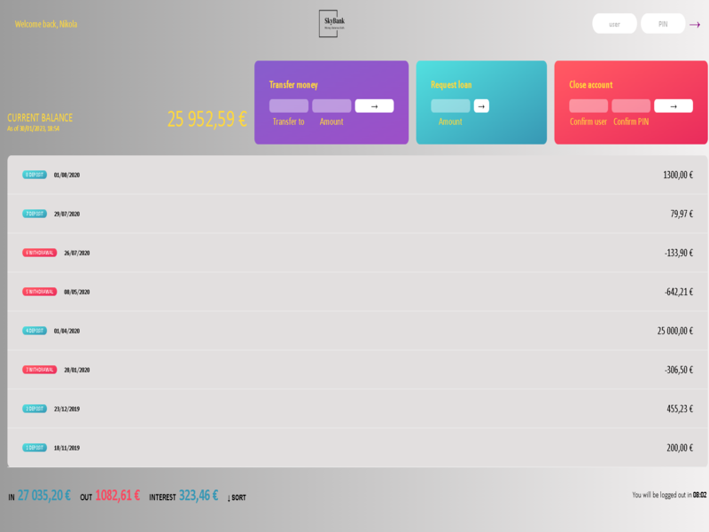
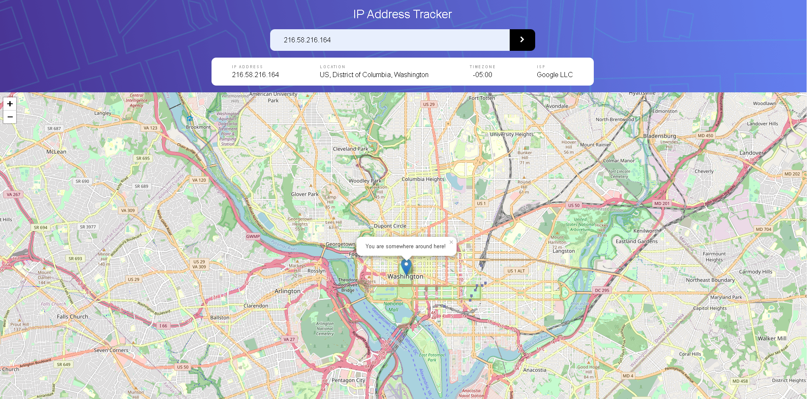
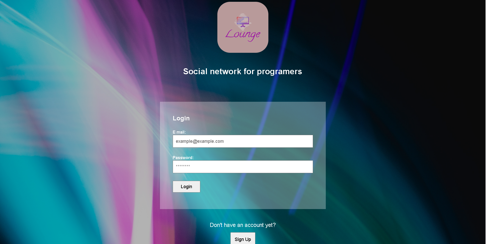
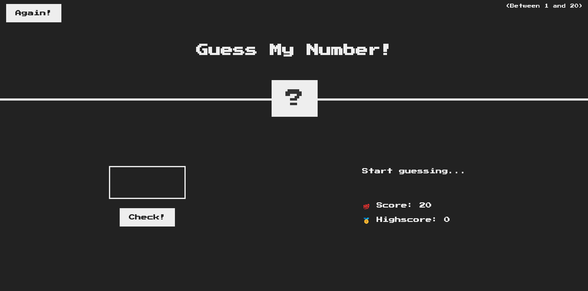
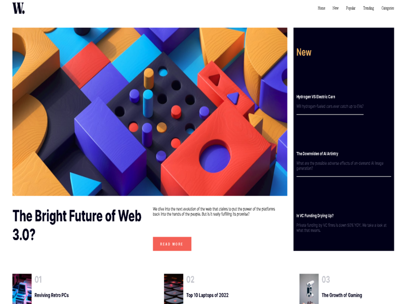

Skybank is a professional website built with HTML, CSS, and JavaScript. It has a clean design with a navigation menu, a prominent call to action, and sections showcasing the bank's products and services. The page is responsive for both desktop and mobile devices.
Skybank application

Skybank's mobile and PC application is a user-friendly platform for managing finances on-the-go. Customers can check account balances, apply for loans, and transfer money easily and securely.There is two accounts made 'John Doe' and 'Nikola Mikic'.You can transfer money between accounts and more.Login with user: 'nm' and pin: '1111' or 'jd' and pin: '2222' and try for yourself.Made with JS.
IP adress tracker

The IP Address Tracker is a web-based tool built with JavaScript that allows users to track the location of a person based on their IP address. The tool provides an interactive map that displays the location of the IP address on a global scale, providing a visual representation of the geographical location of the person. The application can quickly and accurately determine the location of the IP address, even for IP addresses from remote locations.
Social network for programmers

A social network for programmers is a website designed to connect developers from around the world. It provides a platform for members to share their coding knowledge and experience, collaborate on projects, and network with other professionals in the field.
"site is still under construction"
Guess my number game

The Guess My Number game is a fun and challenging activity that tests your numerical skills. The goal of the game is to guess a randomly generated number within a certain range. Players take turns making guesses, and the game provides feedback on whether the guess is too high or too low. The objective is to guess the number correctly in as few attempts as possible, with the goal of achieving the highest score.
Newspaper webpage

The news homepage is a dynamic and responsive web page built with HTML, CSS, and JavaScript.The news homepage is a dynamic and responsive web page built with HTML, CSS, and JavaScript.